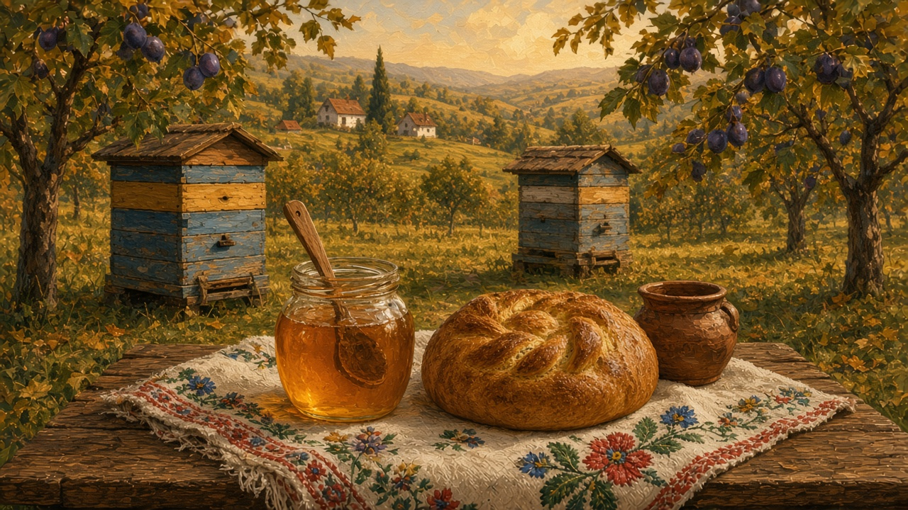
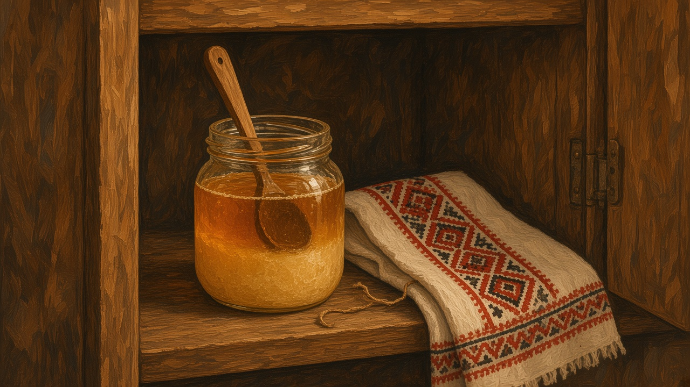

Honey
Miere. Yard food and a gift, not a product line. The jar that still leaves a house wrapped in a cloth, or sits by the loaf with a spoon in it.

The stup at the edge
The hive sits where the orchard thins, or behind the house, past the woodpile and the hens. A stup, sometimes two, painted, a little leaning. Albine work the same air the yard already uses. Children are told not to stand in the line of the entrance. The dog learns. The well, the gate, the stove — those rooms are on the house. The road those yards share is on villages. The same orchard later fills crates for the autumn still; that other job is on țuică. This page is only that box at the edge, and what comes out of it.
The paint is there because bare wood goes grey in one winter. White, or a blue that has already faded. A stone on the lid when the wind takes it. The path out to the boxes is worn flat, and you do not cut across the entrance. A child learns that line the way they learn the dog. You ask whether this yard still keeps a stup, or only the place where one used to stand.
On the table
Honey sits where bread sits. A round loaf, a knife, a spoon of miere instead of jam, or with the jam — that loaf is on bread. Telemea on the same cloth is another weekday salt — that piece is on cheese. Tea with a spoon in it when someone coughs: not a pharmacy, the jar that was already in the cupboard. Winter opens it more often than July does.
The weekday spoon is small. Someone turns the loaf, takes the heel or a thick slice, and the spoon goes in once. It is not a dessert. A child who coughs gets the same jar in a cup of tea, stirred until it loosens, and then the cup goes around if anyone else wants it. You do not measure it. The tea should still taste like tea. The jar goes back with the spoon stuck in the top, or wiped and set beside the lid.
The jar
On the shelf the jar is glass, a little sticky at the rim. A cloth over the mouth, or a lid that does not quite match, tied if the house still bothers. In winter the miere goes cloudy and then hard — crystals at the bottom, then the whole jar. Nobody throws it out. You set it near the stove, or you dig with the spoon. The colder room that keeps the other jars is on salt. The weeks that do this to honey are on winter.
A spoon left in the top is ordinary. It saves a second reach, and it says the jar is open. The cloth wrap is for leaving the house, not for every day on the shelf. A label if someone wrote the year, or no label, because the house already knows which flowering it was. You notice the jar when it is almost empty. The tea goes thin, and someone says so.

After the flowers
The season is late summer, after the flowering, when the orchard is quieter and the harvest is already thinking about jars. June’s yellow crowns on Sânziene are the same season the bees are already working; this page is the later jar, not the flower. Combines, maize, and vines have their own hurry — the vine’s other bottle is on wine. The hive is slower. Someone lifts a frame, or they wait until a neighbor who still knows how comes by. You do not need a lecture on boxes and smoke. You need the habit of asking whether this yard still took honey this year, or only bought a plastic bear in town.
People still name the flowers the way they name a week. Tei, the lime, when the street trees smell of it and the bees are loud. Salcâm, acacia, earlier and paler, the jar a house calls the light one. Rapiță, the yellow rape, if the fields around the yard went that color in spring. A meadow higher up is a different jar again, darker, and someone will say so without a label. You do not need a row of jars with printed names. You need which flowering this house still mentions, and whether the stup was there for it.
The one who still knows
Taking the honey is not a Saturday you read up for. A yard that still has a stup often waits for the neighbor who already knows the frames. A little smoke, so the bees let the box be opened. A frame lifted, looked at, put back or not. You stand where you are told. The combs that stay are already in a bowl by the time most of the house sees them, wax on the newspaper, one taste from the spoon before the lid goes on. You do not need the steps. You need whether this lane still has that person, and whether they came this year.
Neighbors
Albine are livestock with wings. People keep them the way they still keep hens: not as a hobby with a hashtag, as a neighbor that lives at the end of the garden and pays rent in jars. A sting is ordinary. A swarm in a tree is news over the fence. The sat still has a person you call when the bees decide to leave. You do not go looking for a wild hive in the forest the way a film looks for a close-up.
That person is already known on the lane. A box, a few minutes, people watching from the fence. By evening the news is which tree, and whether the bees stayed. The rest of the year the stup is only the painted box, and the jars.
A jar that leaves
A small jar still leaves the house if there is extra. Cloth around the glass, string, sometimes nothing but a hand over the lid in a bag. A name day, a cough in another kitchen, a child going back to town. You do not invoice it. The guest already tasted it at the table, or they will. That is the gift.
The piață jar is the other one. It still counts if you can name the yard, or the person at the stall who can. A village said out loud is better than a plastic bear. That square is on the market. You ask where it came from. If the answer is a place, you take it.
When the stup is gone
Fewer yards keep a hive. The word stayed. Miere still means the thick stuff you trust more if it came from someone you can name, even when the jar came from the piață. Apartment kitchens keep a squeeze bottle by the tea. It pours. It does not go cloudy in January, and it does not remember a flowering. The embroidered cloth is in a drawer. If a stup is still in the family, it is a grandfather’s, or it belongs to a neighbor who still answers.
The claim is the same as the loaf, the cellar brine on salt, and the demijohn on wine: whether this house still knows a stup, or only a shelf. This page is only that: the box at the edge of the orchard, the spoon on the loaf, the gift, and the word that outlasted the bees.